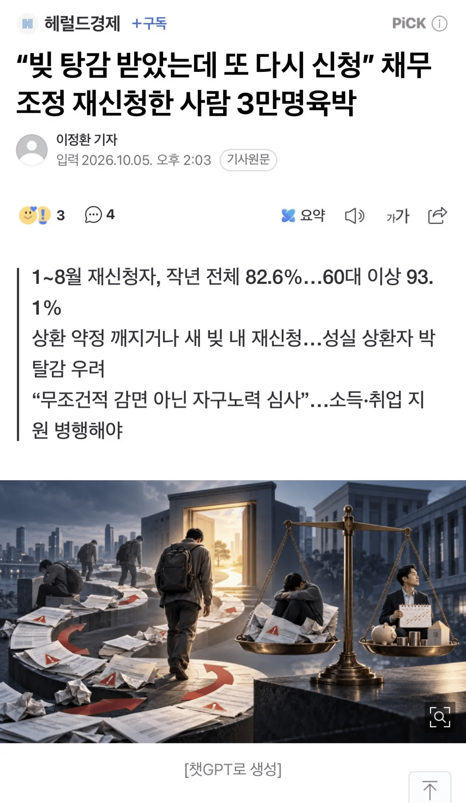

회생이랑 채무 탕감이 꼭 필요한 제도긴 한데
한번 탕감 받았으니 열심히 살아야지가 되야되는데
또 투자해보고 안되면 또 회생하거나 탕감 받아야지가 된다는게
문제임
개인회생도 면책되고 5년뒤면 또 신청 가능함
워크아웃 신속채무탕감으로 시간끈담에
재회생 하기도 하고 좋은 제도인데 악용하는 사례가 너무 많음

회생이랑 채무 탕감이 꼭 필요한 제도긴 한데
한번 탕감 받았으니 열심히 살아야지가 되야되는데
또 투자해보고 안되면 또 회생하거나 탕감 받아야지가 된다는게
문제임
개인회생도 면책되고 5년뒤면 또 신청 가능함
워크아웃 신속채무탕감으로 시간끈담에
재회생 하기도 하고 좋은 제도인데 악용하는 사례가 너무 많음
나도 일때문에 회생법원 자주 들락 거리는데 관리위원들 죽어나감 진짜,,
신용 회복 후 풀대출로 베팅을 또 한다고?
회생 기간 최소3년(?)
모든게 다 막히고 거지로 살았는데?
제정신 아닌거지
진짜 필요한 사람은.못 받게되는 엔딩으로 가게 될.듯
저런거 쓸정도로 엠창인생들은 재산관리라는걸 못할 병신이니 앞으로 죽을때까지 대출을 못받게 막아야지 왜 회생기록을 주기적으로 없애서 풀어주냐고